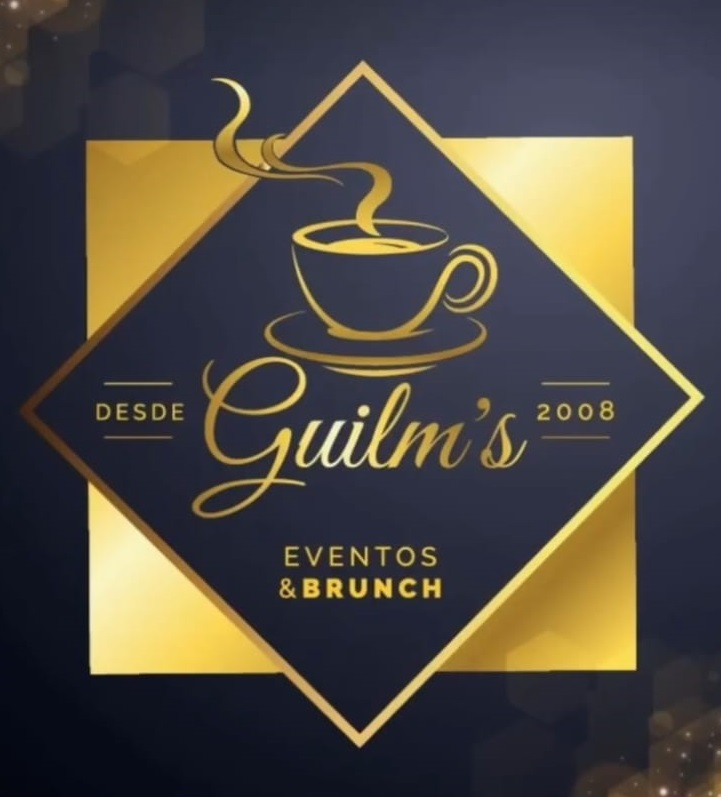

Seu negócio,
sob controle.
VENDASR$ 8.420↗ +12,8%
PRODUTOS248✓ Atualizado
DADOS ILUSTRATIVOS
Na WesCode, desenvolvemos sistemas de gestão, automações e soluções personalizadas para transformar processos complexos em operações mais simples e eficientes.
Da ideia à implementação, tecnologia com foco em usabilidade, organização e resultado.
Ferramentas para organizar vendas, estoque, financeiro e rotinas operacionais em um só lugar.
GESTÃO & CONTROLE ↗Reduza tarefas repetitivas e ganhe tempo com integrações, rotinas e relatórios automatizados.
EFICIÊNCIA & TEMPO ↗Aplicações adaptadas às necessidades específicas da sua operação, sem complicação desnecessária.
SOB MEDIDA ↗Gestão inteligente para cafeterias e pequenos negócios.
Um sistema desenvolvido para integrar as principais operações de uma cafeteria: ponto de venda, produtos, estoque, controle financeiro, fichas técnicas e relatórios — tudo em uma experiência prática e organizada.
Quero conhecer o Café Local ↗Imagens reais das funcionalidades desenvolvidas para o dia a dia de uma cafeteria. Clique para ampliar.
Conheça a cafeteria que utiliza o Café Local no dia a dia do negócio.

CLIENTE CAFÉ LOCALScripts e ferramentas para processamento de arquivos, relatórios e otimização de atividades operacionais.
Fluxo de pedidos com cadastro de clientes, acompanhamento de status, itens e emissão de documentos.
Tecnologias que utilizo para criar aplicações práticas e confiáveis.
À frente da WesCode, sou profissional de tecnologia com experiência em suporte técnico, infraestrutura e desenvolvimento de soluções para necessidades reais do dia a dia.
Gosto de entender como um negócio funciona, identificar oportunidades de melhoria e transformar essas ideias em sistemas objetivos, intuitivos e úteis para quem vai utilizá-los.
Meu foco é unir conhecimento técnico e visão prática para entregar tecnologia que realmente faça diferença.
Vamos tirar sua ideia do papel ↗Precisa de um sistema, uma automação ou quer saber mais sobre o Café Local? Conte sua ideia e vamos conversar sobre as possibilidades.